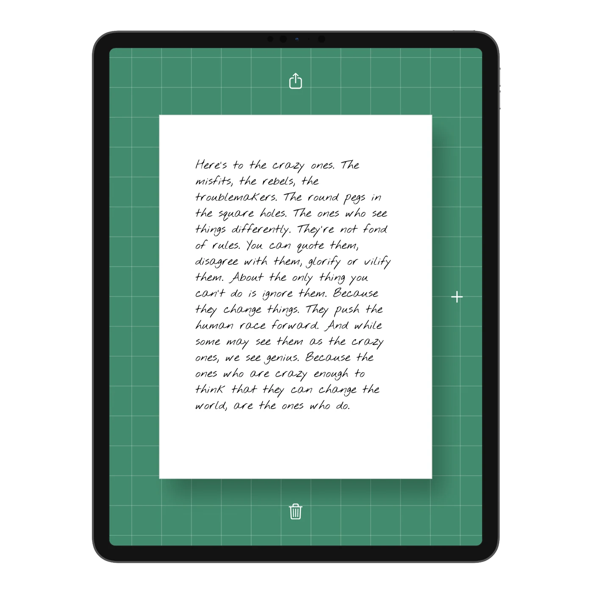
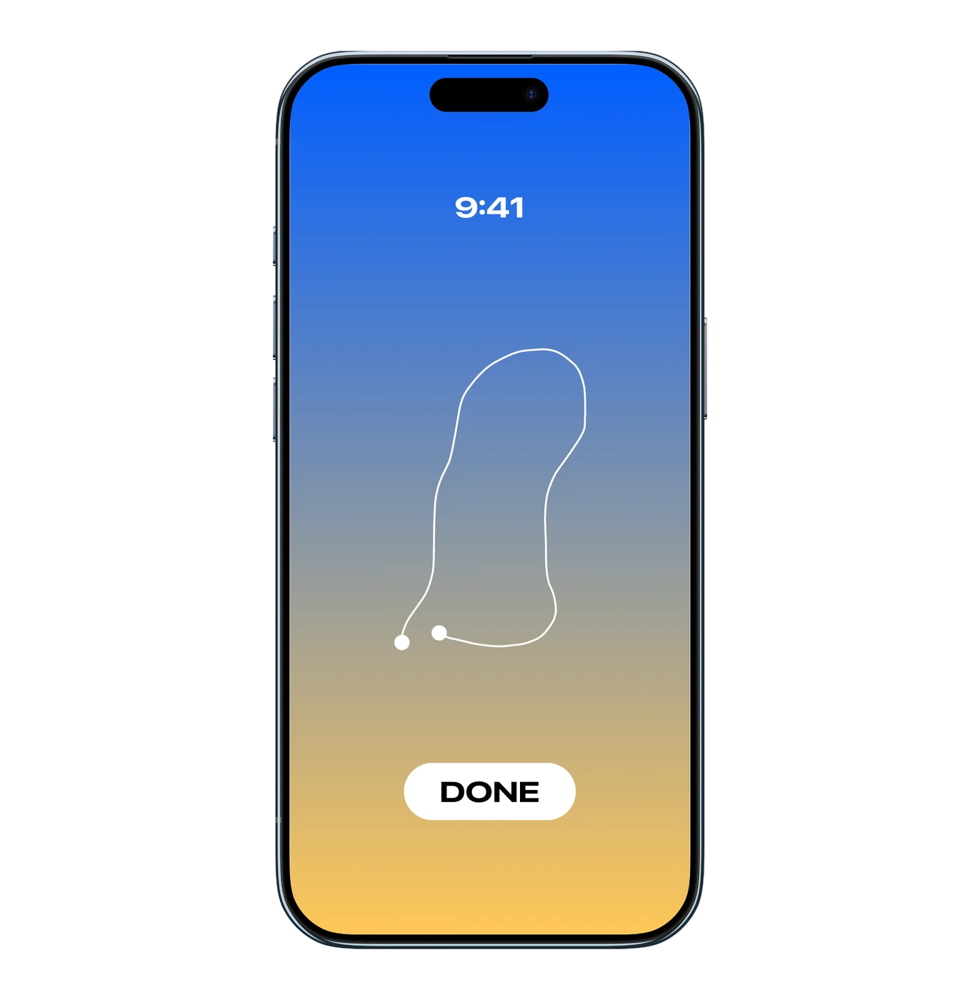
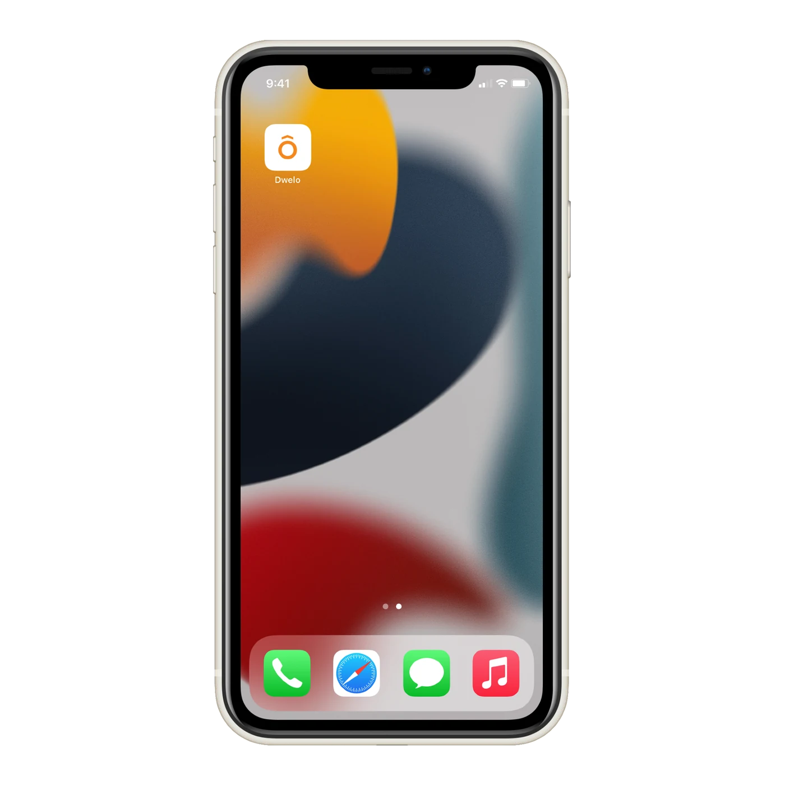

Hello
My name is Cesar Quiroga. I'm a designer based in Austin, Texas.
I studied visual communication with a concentration on user experience and focus primarily on interface and interaction prototyping.
Outside of software design, I take photos, dabble in 3D printing, and recently started sketching out plans for a home I hope to build one day.
I'm currently looking for a product design role. Send me an email if you'd like to connect!

Script An iPad app that helps us connect via handwriting
iRun A running app that de-emphasizes metrics
Dwelo A smart home app redesign